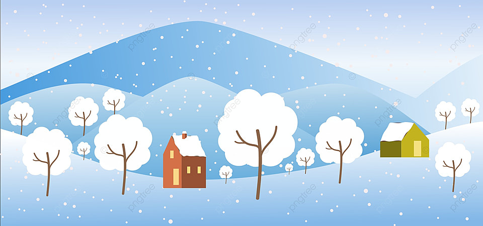
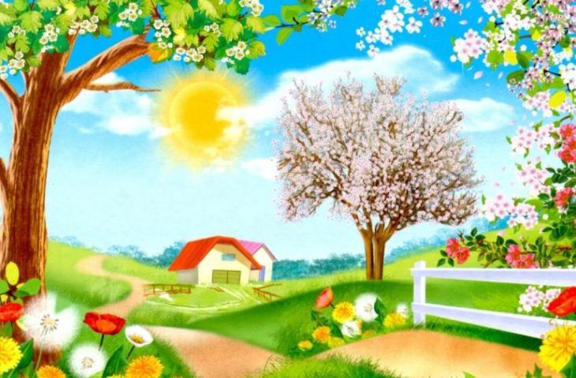
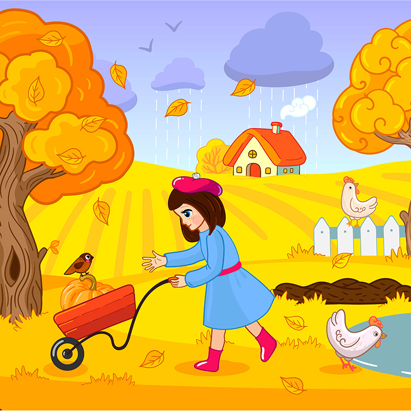

Абзац про то, как я решил стать верстальщиком
Абзац про моего инструктора
Абзац про мой дневничок
Зима́ — одно из четырёх времён года, между осенью и весной. Основной признак этого времени года — устойчивая низкая температура (ниже 0 градусов по Цельсию) во многих районах Земли, на поверхность земли выпадает и ложится снег.
Весна́ — одно из четырёх времён года, переходный сезон между зимой и летом. Слово имеет древнюю индоевропейскую основу и сродни лит. vasarà — «лето», латыш. pavasaris, др.-инд. vasantás — «весна», vasar — «рано».
Лето - одно из четырёх времён года, между весной и осенью, характеризующееся наиболее высокой температурой окружающей среды. Состоит из трёх месяцев: в Северном полушарии — июня, июля и августа, в Южном — декабря, января и февраля.
Осень — одно из четырёх времен года, между летом и зимой. Осень — переходный сезон, когда заметно уменьшение светового дня, и постепенно понижается температура окружающей среды.
| Блюда | Калории | Жиры (г) |
|---|---|---|
| Куриный бульон | 120 | 2 |
| Салат цезарь | 400 | 26 |